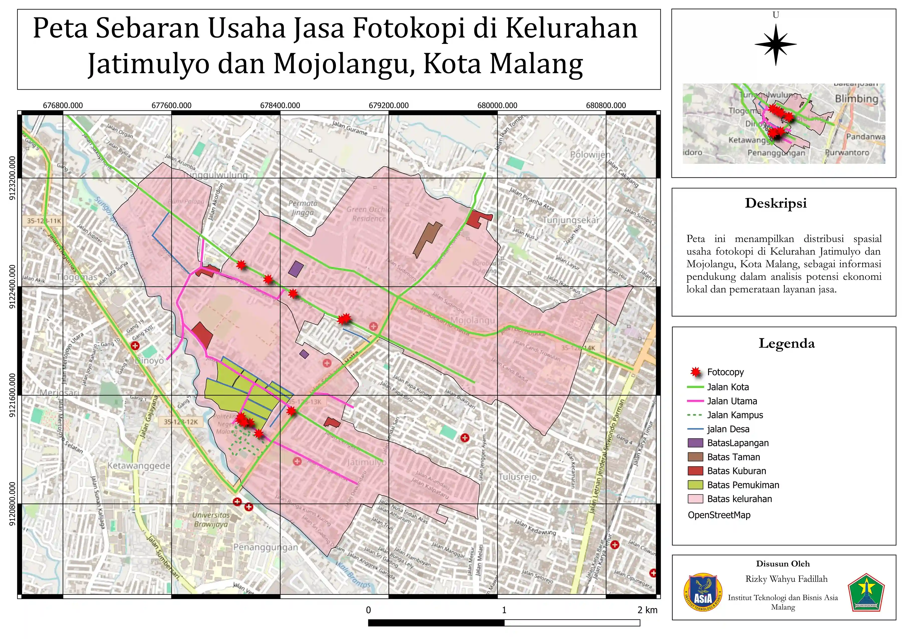

Selamat Datang!
Temukan lokasi usaha fotokopi terdekat di Kelurahan Jatimulyo dan Mojolangu, Kota Malang. Peta interaktif ini menyajikan informasi lengkap tentang distribusi spasial usaha jasa fotokopi untuk mendukung analisis potensi ekonomi lokal dan perencanaan layanan jasa.
Lokasi Akurat
Menampilkan titik lokasi usaha fotokopi yang telah diverifikasi dengan koordinat GPS yang akurat
Peta Interaktif
Navigasi mudah dengan peta berbasis OpenStreetMap yang dapat diperbesar dan dijelajahi
Analisis Spasial
Visualisasi distribusi usaha untuk mendukung analisis ekonomi lokal dan pengambilan keputusan
Informasi Lengkap
Dilengkapi dengan legenda dan deskripsi untuk memudahkan pemahaman peta
Preview Peta
Jelajahi Peta Sekarang!
Akses peta interaktif lengkap untuk menemukan lokasi usaha fotokopi di wilayah Anda
Buka Peta Interaktif →